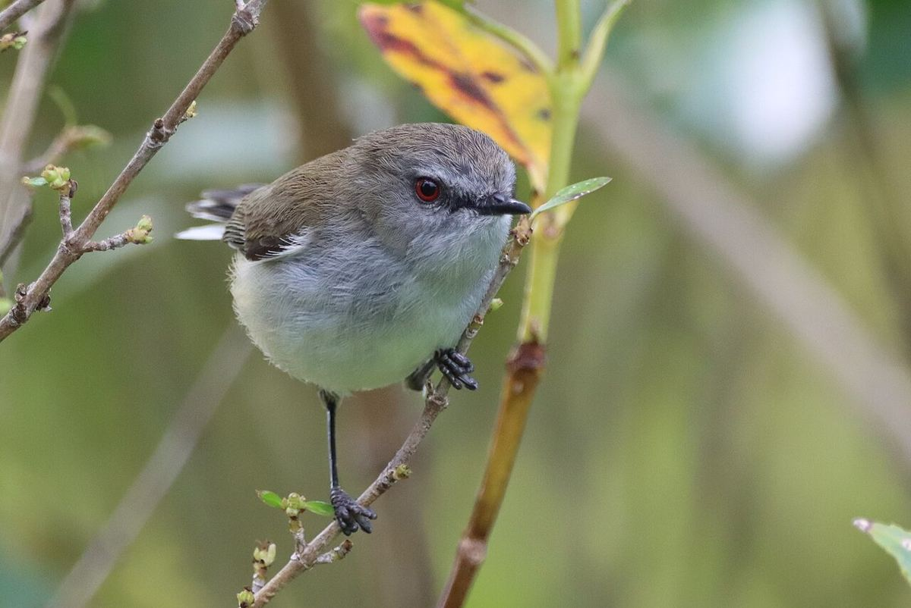

Grey warbler
riroriro · Gerygone igata
Commonly heard in scrub and at forest edges island-wide. Listen for the trill.
Story
Unlike many native birds, riroriro kept almost all their range after people arrived. They live in forest, farmland, gardens and towns, including Kawau's regenerating bush.
Behaviour
Restless and more often heard than seen. Warblers almost hover at twig tips to pick off insects. They build a hanging, domed nest with a side entrance, usually 2–4 m up in mānuka or kānuka.